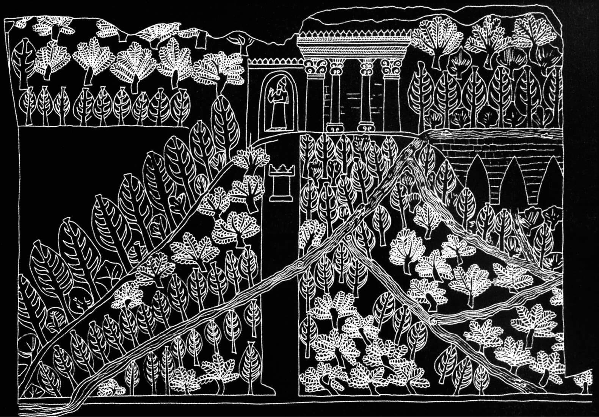

The Ultraviolet City
Designing for the Interspecies Eye
The Mystery of the Third Planet (1982) explores variations of
scale and color that resonate with the visual strategies later used in
Avatar to construct fantastical, extraterrestrial vegetal
environments.
The vegetal cities and imaginary flora of the planet Pandora in
Avatar (2009) feature bioluminescent plants that evoke
ultraviolet photography of flowers. Their exaggerated proportions
generate landscapes that appear both immersive and radically alien.

Neo-Assyrian representations of terraced gardens, canals, aqueducts,
and monuments. Drawings traced from bas-reliefs of wall panels,
Nineveh (Iraq), circa 7th century BCE.
Hanging Gardens of Babylon
The legendary accounts of the Hanging Gardens of Babylon represent a
historical and utopian model for our experimental conception of a
fusion between the contemporary city and nature in the age of
artificial intelligence. These narratives convey a timeless dream
held since the earliest cities: the aspiration to merge the urban
environment with the natural world.
These gardens embody a dual urban symbolism that is both nostalgic
and forward-looking. On one hand, they evoke the traces of our
original habitat, reflecting the condition in which humans lived as
hunter-gatherers within nature itself. This period gave rise to
myths of the Garden of Eden, the tradition of Persian gardens, and
broader imaginaries of a floral Paradise.
Images of a floral bouquet within the human-visible spectrum, captured
using a mechano-optical device that closely approximates the spatial
resolution of bee vision. The first image shows a segment that could
easily be mistaken for fragmented parts of a scene, while the second
reveals how a holistic view discloses the true form and structure of the
flowers. The third suggests the potential completion and processing of
the image within the brain.
While humans readily perceive the Gestalt of a scene, it was long
assumed that insects such as bees relied only on elementary visual
cues. Recent research, however, demonstrates that bees favor global
processing while retaining the ability to attend to local elements
within complex visual environments.
A.G. Dyer and S.K. Williams, "Mechano-optical lens array to simulate
insect vision photographically," Imaging Science Journal,
vol. 53, 2005, pp. 209–213.
Hypothetical images of an orchid flower as perceived by a bee. (a)
Photograph of a single flower and (b) an inflorescence of Orchis
caspia. The reconstructed images (c, d, e, f) display the quantum
captures of the three types of bee photoreceptors in false color.
Image (c) corresponds to the resolution of the camera, while (d), (e),
and (f) show how the flower is projected onto the ommatidial lattice
at distances of 4, 8, and 12 cm, respectively.
After Vorobyev et al., Institut für Neurobiologie, Freie Universität
Berlin, 1997.